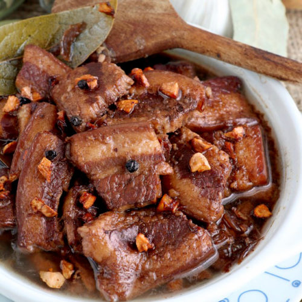

This version is considered Filipino food. The ingredients used and not used in this recipe make this dish different from the traditional. Fish sauce, bell pepper, celery, and coconut milk or evaporated milk are some of the ingredients that can be found on Filipino chicken curry versions.
Pork Adobo is definitely a favorite among many around the world. For this, we cook pork slices in a perfect mix of soy sauce, vinegar, and garlic to make this savory and sour viand. And I’ve got to say, it’s definitely a great way to introduce the world to what Pinoy cooks can make! But actually, there are other renditions of adobo.
